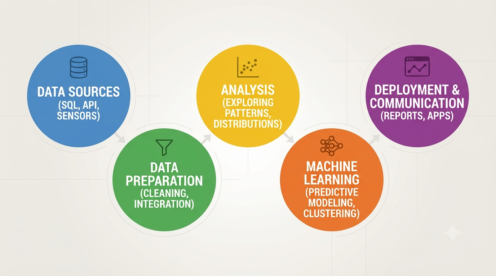
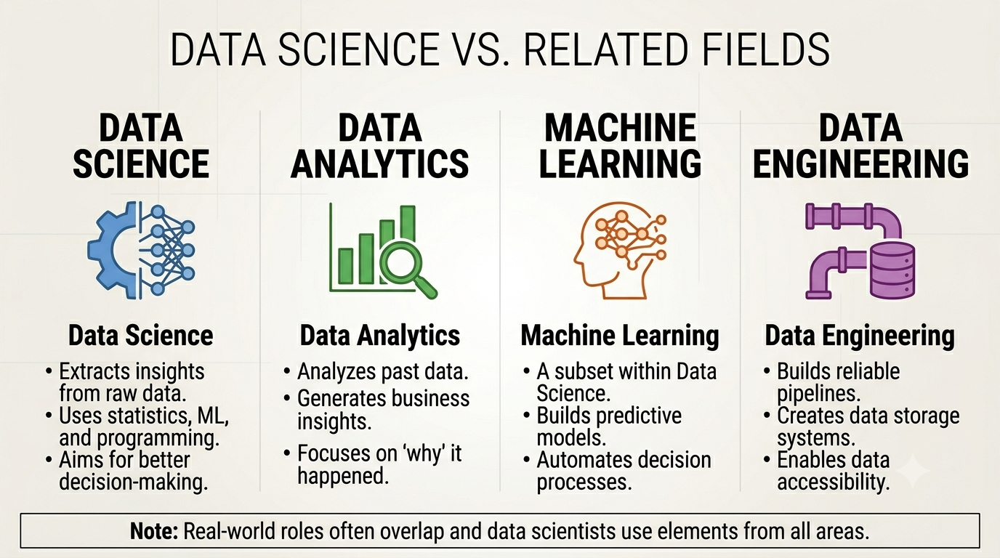

Concept notes and practical machine learning / data engineering articles.
Data Science is an interdisciplinary field that uses data, statistics, programming, domain understanding, and machine learning techniques to extract insights and support better decision-making. In simple words, data science helps transform raw data into meaningful information that can be used to solve business problems, identify patterns, automate decisions, and build intelligent systems.
Modern organizations generate data from websites, mobile applications, transactions, sensors, customer interactions, and internal systems. However, raw data alone has little value unless it is cleaned, analyzed, and interpreted correctly. This is where data science becomes important. It helps businesses understand customer behavior, optimize operations, forecast future trends, detect anomalies, and improve products or services.

A data science project usually begins with understanding the business problem. Then the required data is collected, cleaned, and explored. Based on the objective, a model or analytical approach is selected. The results are evaluated and finally communicated to stakeholders or deployed into a production system.
Data Science overlaps with analytics, machine learning, business intelligence, and data engineering, but it is not exactly the same as any one of them.

In practice, a data scientist may use concepts from all these areas depending on the problem.
IBM overview on Data Science: https://www.ibm.com/think/topics/data-science
Regression and classification are two foundational types of supervised machine learning problems. In both cases, a model learns patterns from labeled historical data, but the type of output predicted by the model is different.
Regression is used when the target variable is continuous in nature. In simple words, the model predicts a numeric value rather than a category. Examples include predicting house prices, monthly sales, insurance claim amount, temperature, or employee salary.
A regression model tries to estimate the relationship between input features and a continuous output. For example, if we are predicting house price, the model may learn from variables such as area, location, number of rooms, and age of the property.
Classification is used when the target variable belongs to a category or class. Instead of predicting a number, the model predicts a label such as Yes/No, Fraud/Not Fraud, Spam/Not Spam, or Attrition/No Attrition.
For example, in an employee attrition use case, the model may predict whether an employee is likely to leave the company. In a medical setting, a classification model may predict whether a patient is high-risk or low-risk based on available health indicators.
Choosing the correct problem type is important because it affects model selection, evaluation metrics, and business interpretation of the result.
IBM overview on classification vs regression: https://www.ibm.com/think/topics/classification-vs-regression
Accuracy alone is often not enough to evaluate a classification model, especially when the data is imbalanced. In many business problems, the cost of false positives and false negatives is different, which is why precision, recall and F1 score become important.
Precision answers the question: Out of all records predicted as positive, how many were actually positive?
Precision becomes important when false positives are costly. For example, if a fraud model marks too many genuine transactions as fraud, customer experience suffers. In such cases, we care about making sure predicted positives are truly positive as often as possible.
Recall answers the question: Out of all actual positive records, how many did the model correctly identify?
Recall is important when missing a true positive is expensive. For example, in disease detection, failing to identify an actual positive case can be more dangerous than incorrectly flagging a few extra cases.
F1 score combines precision and recall into a single measure. It is useful when you want a balance between the two rather than optimizing only one side.
In practice, the “best” metric depends on business context:
Example: In employee attrition prediction, if the goal is to identify most at-risk employees, recall may matter more. But if HR interventions are expensive and should only target highly likely leavers, precision becomes more important.
IBM overview on classification metrics: https://www.ibm.com/think/topics/classification-models
ETL and ELT are two common patterns used to move and prepare data for analytics, reporting, and machine learning systems. Both involve extracting data from source systems and loading it into a target environment, but the order of transformation differs.
In ETL, data is first extracted from source systems, then transformed into the required format, and only after that loaded into the destination system such as a data warehouse.
This approach is useful when strong data cleaning, formatting, business rules, or schema transformations must happen before the data is stored in the final analytics environment.
In ELT, raw data is first extracted and loaded into the target platform, and transformation happens later inside that platform. This is common in modern cloud data environments where warehouses and lakehouse systems are powerful enough to perform transformations efficiently.
In modern data engineering, ELT is often preferred for scalability and flexibility, especially with platforms such as Snowflake, BigQuery, Azure Synapse, or Databricks. However, ETL still remains highly relevant depending on governance, architecture, and business constraints.
IBM overview on ETL: https://www.ibm.com/think/topics/etl